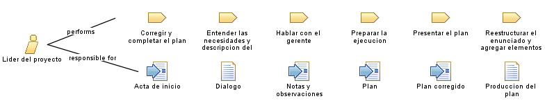

|
| Persona encargada de dirigir, coordinar y supervisar todas las actividades relacionadas con la ejecución de un proyecto. |
|
Relationships
 |
| Primary Performs |
|
| Modifies |
|
Main Description
El líder de proyecto tiene diversas tareas y responsabilidades, que incluyen:
-
Planificación: El líder de proyecto participa en la planificación del proyecto, definiendo los
objetivos, el alcance, los plazos, los recursos necesarios y las estrategias para lograrlos. Revisa
el plan detallado que servirá como guía para la ejecución del proyecto.
-
Organización y asignación de tareas: El líder de proyecto asigna las tareas y responsabilidades a
los miembros del equipo, asegurándose de que estén claras y alineadas con los objetivos del proyecto. Coordina la
distribución de recursos y garantiza que cada tarea sea realizada por la persona adecuada.
-
Coordinación y comunicación: El líder de proyecto es el punto central de comunicación y
coordinación entre los miembros del equipo, los stakeholders y otras partes interesadas.
-
Supervisión y seguimiento: El líder de proyecto supervisa el avance de las tareas, realiza
seguimiento de los plazos y el presupuesto, y verifica que se cumplan los estándares de calidad establecidos.
Identifica posibles desviaciones o riesgos y toma medidas correctivas para mantener el proyecto en la dirección
correcta.
-
Resolución de problemas: El líder de proyecto es responsable de identificar y resolver problemas o
conflictos que puedan surgir durante la ejecución del proyecto. Utiliza su experiencia y habilidades de resolución
de problemas para abordar obstáculos y mantener el proyecto en marcha.
-
Gestión de stakeholders: El líder de proyecto gestiona las relaciones con los stakeholders,
asegurándose de entender sus necesidades y expectativas, y buscando su participación activa en el proyecto. Busca
mantener una comunicación efectiva y construir relaciones sólidas para lograr el apoyo y compromiso necesarios.
|
Staffing
| Skills |
El lider del proyecto tiene habilidades importantes para ejecutar el proyecto, tales como:
-
Habilidades de liderazgo: El líder de proyecto debe ser capaz de inspirar, motivar y guiar a su
equipo. Debe tener habilidades de liderazgo para establecer una visión clara, comunicar de manera efectiva, tomar
decisiones y fomentar la colaboración.
-
Habilidades de comunicación: La comunicación efectiva es fundamental en la gestión de proyectos.
El líder de proyecto debe ser capaz de comunicarse claramente con el equipo, los stakeholders y otros miembros del
proyecto. Esto incluye habilidades de escucha activa, habilidades de presentación, capacidad para transmitir
información de manera concisa y habilidades de negociación.
-
Habilidades de planificación y organización: Un líder de proyecto debe tener habilidades sólidas
de planificación y organización. Debe ser capaz de desarrollar un plan detallado del proyecto, establecer plazos,
asignar recursos y realizar un seguimiento efectivo del progreso. También debe ser capaz de identificar y gestionar
los riesgos del proyecto.
-
Habilidades de resolución de problemas: Los problemas y desafíos son inevitables en cualquier
proyecto. El líder de proyecto debe tener habilidades de resolución de problemas para identificar y abordar los
obstáculos de manera efectiva.
-
Habilidades de gestión del tiempo: La gestión del tiempo es esencial para garantizar que el
proyecto se complete dentro de los plazos establecidos. El líder de proyecto debe ser capaz de establecer
prioridades, gestionar eficientemente el tiempo y ayudar al equipo a mantenerse enfocado en las tareas clave.
-
Habilidades de trabajo en equipo: El líder de proyecto debe ser capaz de fomentar la colaboración
y el trabajo en equipo. Debe tener habilidades para construir relaciones sólidas con los miembros del equipo,
promover un ambiente de trabajo positivo y facilitar la comunicación efectiva entre todos los involucrados en el
proyecto.
|
| Assignment Approaches |
El lider del proyecto puede tener diferentes enfoques de asignación, algunos de ellos son:
-
Enfoque basado en habilidades: El líder de proyecto asigna las tareas según las habilidades y
competencias específicas de cada miembro del equipo.
|
Key Considerations
| El lider del proyecto es la persona encargada de que los objetivos del proyecto se puedan lograr de manera correcta. |
|